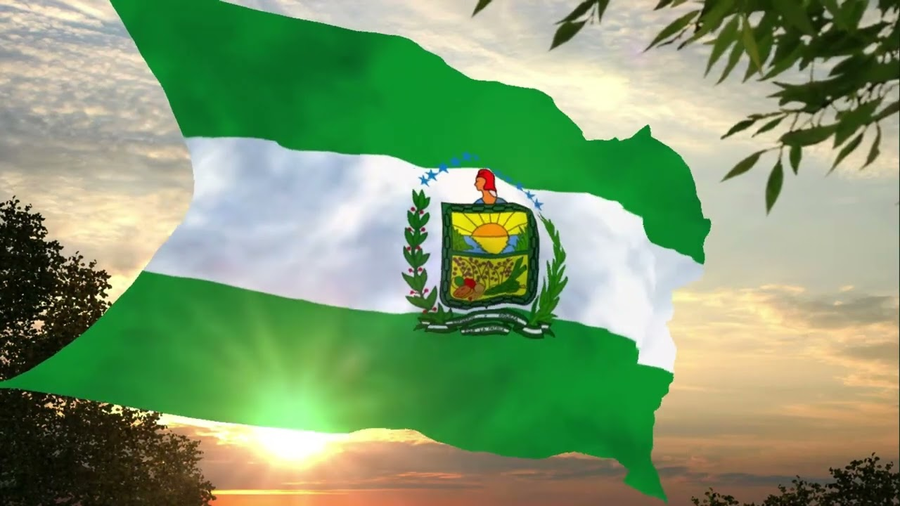
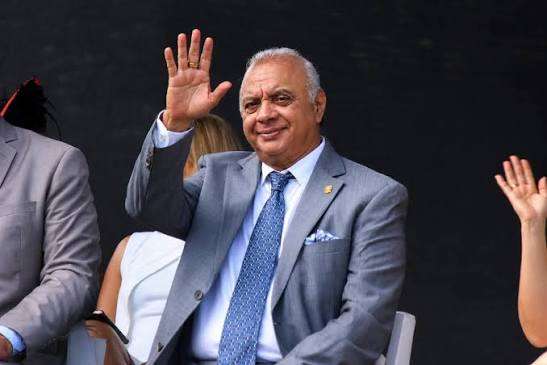
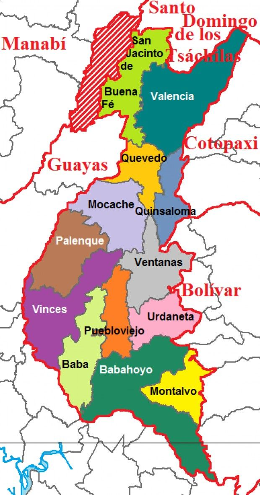

Descripcion
La provincia de Los Ríos esta ubicada en la region costa del Ecuador, su capital es Babahoyo y se caracteriza por sus extensas zonas agricolas, sus rios, su gastronomia y las tradiciones de su poblacion montubia.
Entre sus principales actividades economicas se encuentran la agricultura, el comercio, la ganaderia y la produccion de alimentos. Entre sus cultivos destacan el cacao, el banano y el maiz.
Bandera de la Provincia

La bandera es uno de los simbolos representativos de la provincia.
Autorizades provinciales
Perfecto
Johnny Teran Salcedo.
Gobernador

Galo Lara Yepez. Verifica el nombre y su cargo vigente en la fuente oficial antes de entregar eñ proyecto.
Poblacion
Segun el Censo de Poblacion y Vivienda de la provincia de Los Rios registro 898.089 habitantes o cerca de 898 mil personas, consolidandose como la cuarta provincia mas poblada del pais.
Mapa de la Provincia

El mapa permite localizar la provincia dentro del territorio Ecuatoriano.
Menu de Cantones
Selecciona un canton para conocer su historia, parroquia, gastronomia, atractivos, turistico, alojamiento,alcalde, poblacion y ubicacion.